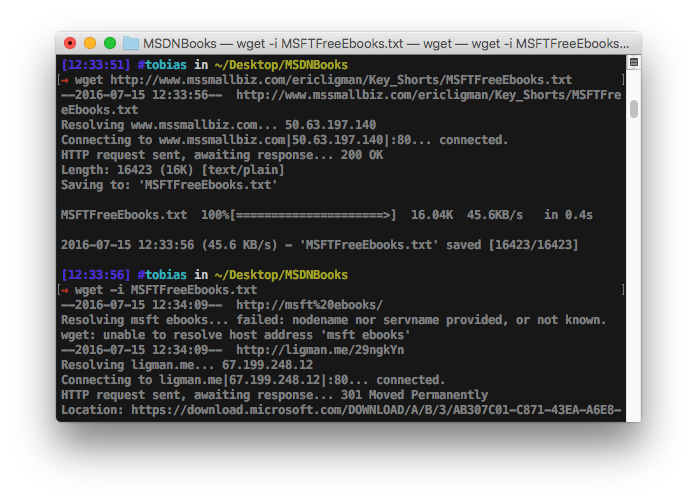

Eric Lingman, seinerseits Director of the Sale Excellence Blog, hat nun in einem Blogpost eine viel Zahl an nun freien eBooks rund um Microsoft Technologien als Linkliste veröffentlicht.

Wer im stressigen Alltag nicht die Muse hat alles durchzusehen was man brauchen könnte sondern dies eher nachgelagert machen möchte hat Pech gehabt – es gibt laut Blogpost aus diversen Gründen keinen “Download all” Button.
Da nun aber selbst auch auf Windows eine Bash vorhanden ist, entsteht für Konsoleros nur der Zeitaufwand was es benötigt, drei Zeilen Bash-Befehle zu schreiben.
#1. Wir laden die Linkliste
wget http://www.mssmallbiz.com/ericligman/Key_Shorts/MSFTFreeEbooks.txt
#2. Wir laden alle verlinkten eBooks
wget -i MSFTFreeEbooks.txt
#3. *.pdf Suffix anhängen
for f in *; do mv "$f" "$f.pdf"; done
Nicht alle Links müssen funktionieren, so kann es durchaus sein, dass eure Bash, bzw. wget manchmal Fehler wirst. Der Großteil der Links funktionierte jedoch einwandfrei.
Quelle: drwindows.de
Zurück